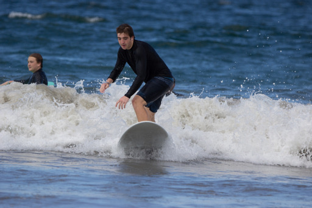
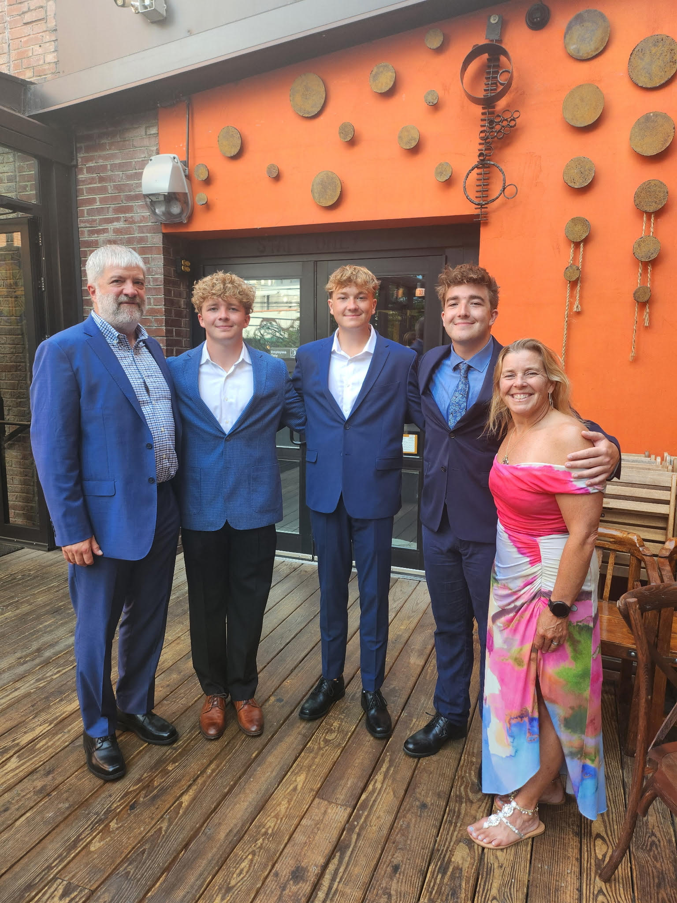
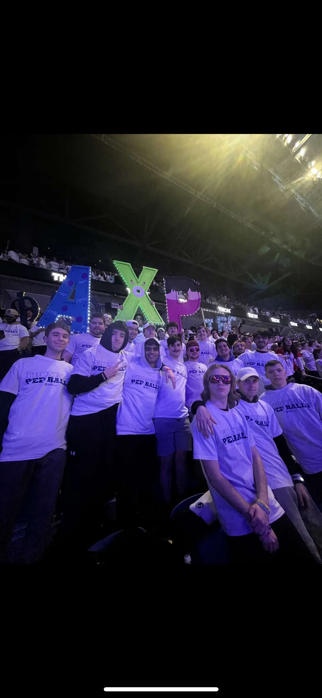
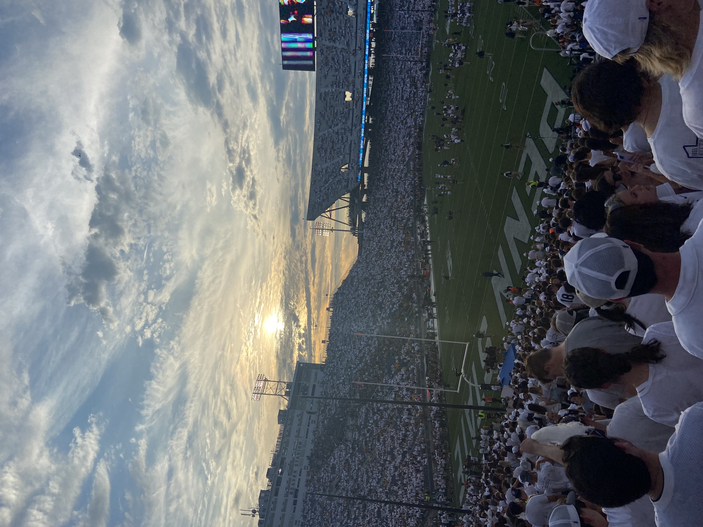
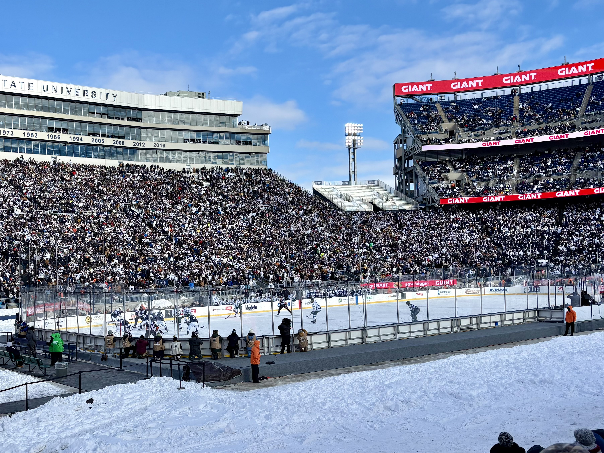
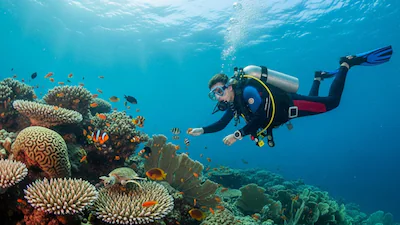

Jake Christianson
I grew up in Belmar, New Jersey, and a lot of who I am comes from the people, experiences, and environments I’ve been around. Whether it’s my family, time at Penn State, or traveling, I tend to pay attention to what’s going on around me and learn from it.

Family
My family has always been a big part of my life. I’m the oldest of three boys, with my brothers Colin and Ty close behind, so growing up was always competitive, active, and never quiet.
My mom, Barbara, introduced me to the water at a young age, which turned into a lasting part of who I am. My dad, Tod, has had a big influence on how I approach things—he’s someone who leads by example and has helped me stay grounded over time.

Penn State and community
A lot of my time at Penn State has been about being part of something bigger than just classes. Whether it’s football games, the outdoor hockey game, or just being in the crowd, those are some of the moments that stand out the most.
Being part of Alpha Chi Rho gave me the chance to participate in THON in honor of a friend I lost to cancer. It’s something that’s stuck with me and showed me how much a community can do when people really show up for each other.



Travel
Traveling has become a big part of how I spend my time, especially since my family trades a traditional Christmas for trips together. A lot of those trips have taken me to warm places where I can surf, dive, and explore new environments.
Some of my best memories come from being in the water—whether it’s paddling over an eight-foot sand tiger shark in Belmar or being just a few feet away from a crocodile in Costa Rica.
A few places stand out. Costa Rica was probably the best overall, with surfing one day and exploring the jungle the next. Maui had the best diving I’ve experienced so far and gave me my most memorable New Year’s. Curaçao was unique because I could snorkel right from the hotel, with coral everywhere you looked.


1 / 13

SCUBA diving
I got SCUBA certified in Curaçao in 2025, but I had already experienced diving in places like Hawaii and Key West before that. Being underwater is one of the few times everything feels completely still, which makes it one of the most peaceful experiences I’ve had.
It’s a completely different perspective—one that makes you slow down and actually take in what’s around you.